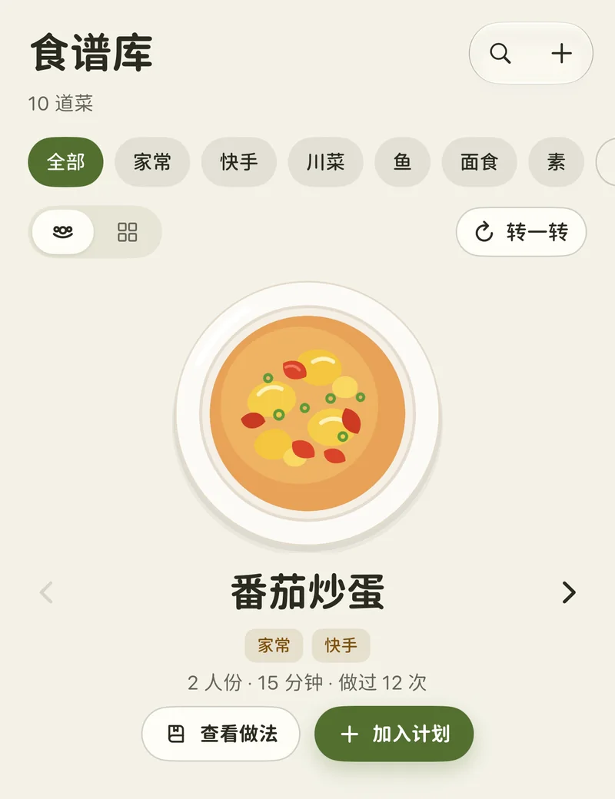
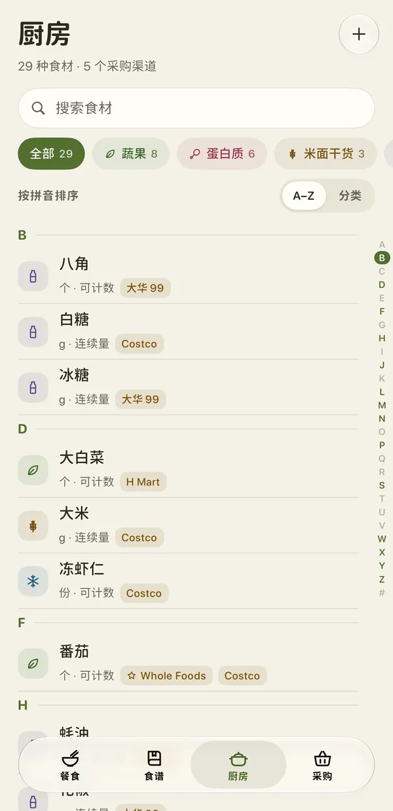
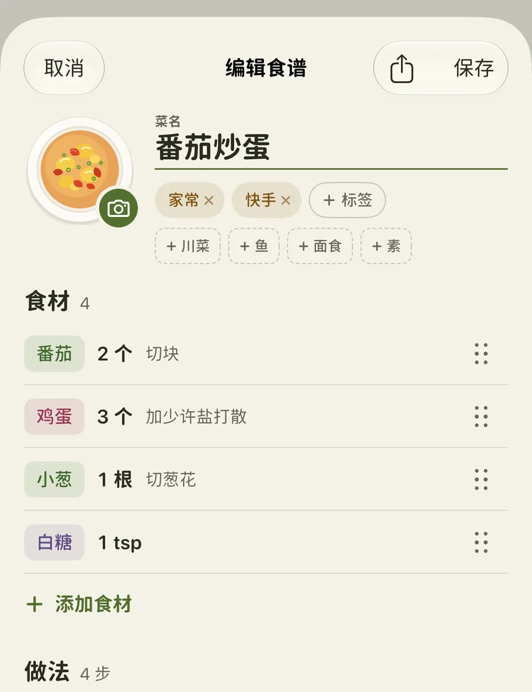
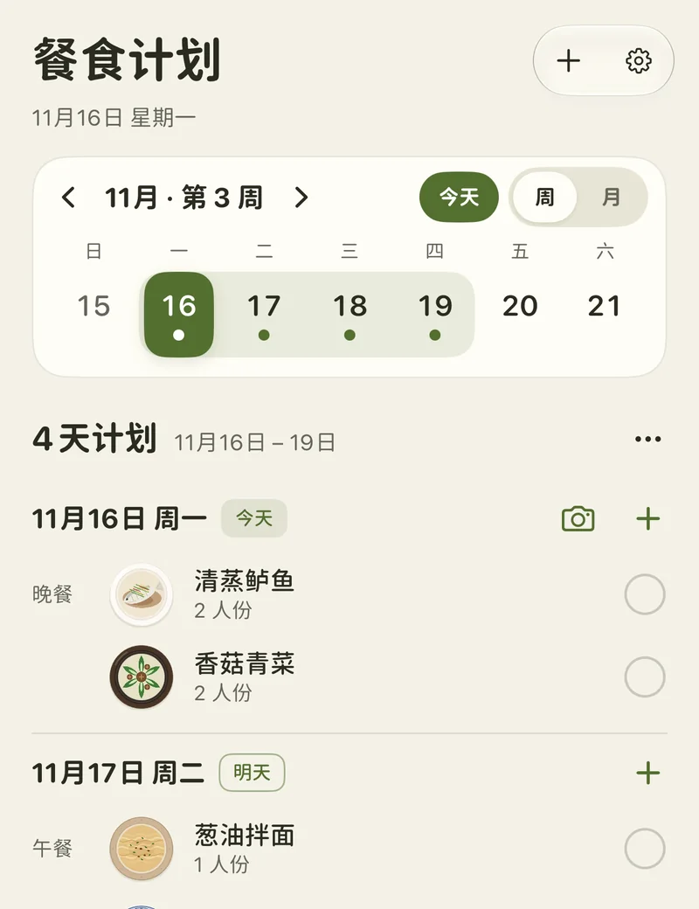
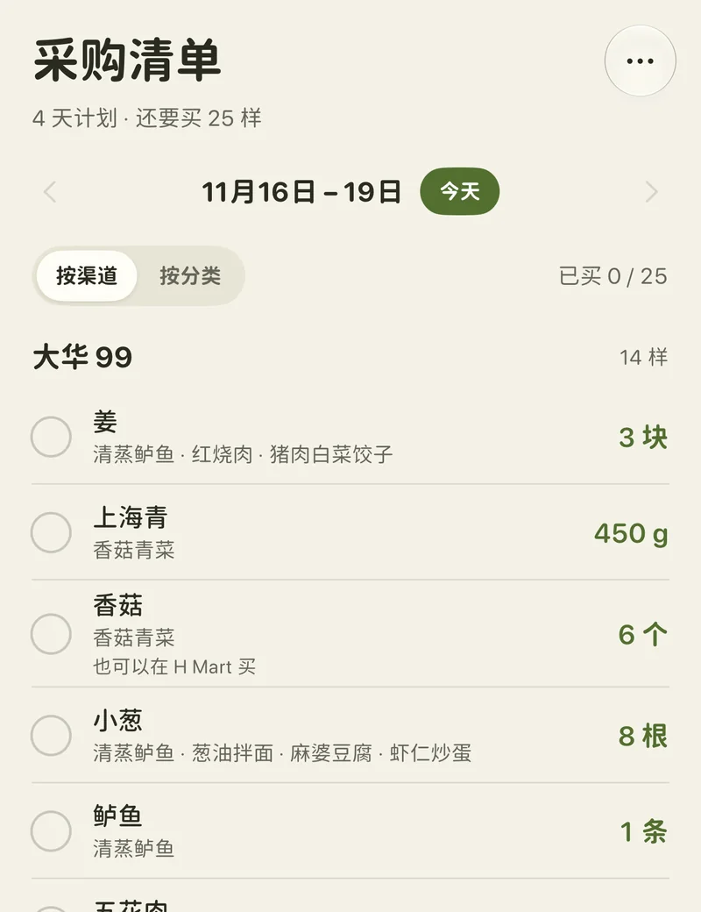
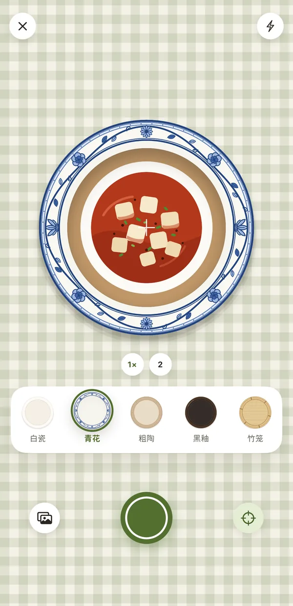
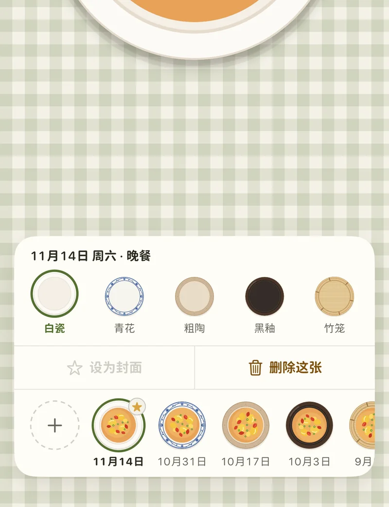
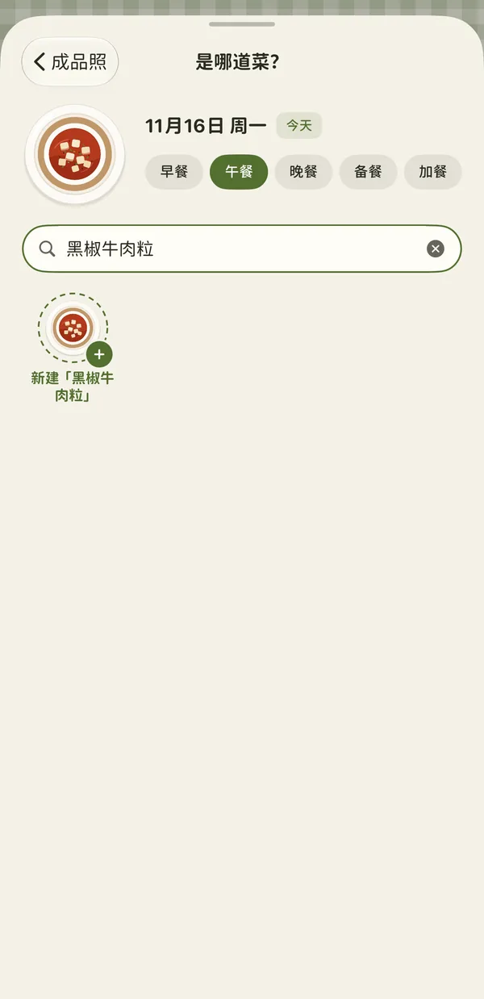

陪你记录的个性化食谱书
打造你的
个人食谱知识库
拍下做好的菜
看见每一次进步
把拿手菜
分享出去
记住你的食材、常去的店和拿手做法
排好每一餐，清单自动算好
可爱的盘子相机，成品照一张张攒起来
拍完顺手记成一道新菜
做成一张食谱卡
扫码就能收下这道菜
西兰花炒牛肉
食谱知识库
打造你的
打造你的
个人食谱知识库
认得你的食材和常去的店，记下你的拿手做法
排好每一餐，采购清单一目了然





成品照
拍下做好的菜
拍下做好的菜
看见每一次进步
可爱的盘子相机，把每次做的菜都留下来
回头看看变化，拍完顺手就能记成新菜



iCloud 同步
厨房、食谱和计划通过你自己的 iCloud 私有库同步。
不用注册
没有账号，打开就能用。
深浅模式
支持浅色和深色模式。
简体、繁體和 English
随时在设置里切换 App 语言。
你的厨房数据
只属于你
食材、食谱、计划和成品照保存在 iPhone 上；打开 iCloud 后，也保存在你自己的 iCloud 私有库里。食序没有自己的服务器，开发者看不到这些内容；从 2.1 版起，用二维码分享出去的菜除外。从 2.0 版起，App 还会把使用统计发给 Google Analytics，详见隐私政策。
阅读隐私政策从一道菜开始
在 App Store 下载
iPhone 免费下载 · iOS 17 及以上